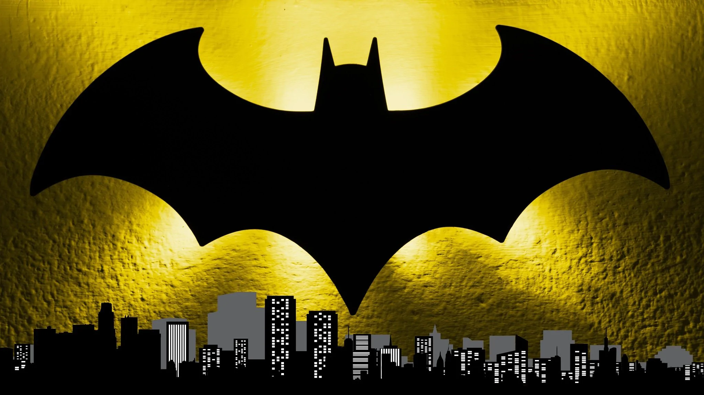

sierpniu 2013 Ben Affleck został obsadzony w roli Bruce’a Wayne’a / Batmana w DC Extended Universe[29]. Zadebiutował w filmie Batman v Superman: Świt sprawiedliwości w 2016, a następnie pojawił się w Suicide Squad (2016) i Lidze Sprawiedliwości (2017)[30][31][32]. W październiku 2014 Warner Bros. ujawnił plany dotyczące solowego filmu o Batmanie z Affleckiem w roli głównej, który był także w trakcie negocjacji dotyczących reżyserii i współtworzenia scenariusza[33][34][35]. Produkcja miała rozpocząć się gdy Affleck zakończy pracę nad Nocnym życiem (2016)[34][35]. Affleck i Johns ukończyli pierwszy szkic w marcu 2016[36]. Scenariusz miał opowiadać o wydarzeniach po Batman v Superman i Lidze Sprawiedliwości i być inspirowany komiksami[34]. Affleck porównał klimat filmu do Batman v Superman, a także gry wideo Batman: Arkham Asylum (2009)[37][38]. Robert Richardson, który był zaangażowany w projekt na jego wczesnym etapie potwierdził, że scenariusz był przede wszystkim osadzony w Arkham Asylum[39]. Przedstawiał on Slade’a Wilsona / Deathstroke’a, który chciał uczynić Batmana bezbronnym przed walką z nim na ulicach Gotham[38]. Planowano, że pojawi się Batgirl, która pomoże Batmanowi[40]. Johns powiedział, że film miałby również rozwijać wątek śmierci Robina, która została zasugerowana w Batman v Superman[36]. Dyrektor generalny Warner Bros. Kevin Tsujihara potwierdził podczas CinemaCon w kwietniu 2016, że Affleck wyreżyseruje film[41][42]. W maju Jeremy Irons ujawnił, że ponownie wcieli się w rolę Alfreda Pennywortha z Batman v Superman, a w sierpniu poinformowano o obsadzeniu Joe Manganiello w roli Deathstroke’a[36]. Dodatkowo Jared Leto wyraził zainteresowanie powtórzeniem roli Jokera z Suicide Squad[43]. Zack Snyder nakręcił scenę po napisach do Ligi Sprawiedliwości, która miała przygotować widzów na film o Batmanie[44][45]. Przedstawiała ona Lexa Luthora (Jesse Eisenberg) ujawniającego Deathstroke’owi sekretną tożsamość Batmana[45][44]. W październiku Affleck ujawnił, że film zatytułowany będzie Batman[46]. W grudniu powiedział, że zdjęcia prawdopodobnie rozpoczną się w połowie 2017, a premiera odbędzie się w 2018[46][36]. W tym samym miesiącu planowany sequel Ligi Sprawiedliwości został opóźniony na rzecz Batmana[47]. W tym czasie Chris Terrio został zatrudniony do prac nad scenariuszem[48]. Affleck ogłosił w styczniu 2017, że rezygnuje z funkcji reżysera, aby skupić się na swojej roli[49]. Pozostał jednak producentem filmu[49]. Kilka miesięcy później ujawnił, że powodem rezygnacji było to, że nie był w stanie pokierować scenariusza w sposób, w jaki chciał i czuł, że nadszedł czas, aby ktoś inny „miał na to szansę”[50]. W tym czasie Warner Bros. skupiło się na innych filmach, co sprawiło, że film Afflecka został odsunięty[51]. Scena po napisach w Lidze Sprawiedliwości została zmieniona w postprodukcji, aby zapowiadała grupę Injustice League, która miała się pojawić w sequelu Ligi Sprawiedliwości zamiast roli Deathstroke’a w Batmanie, jednak oryginalna scena została umieszczona w 2021 w Lidze Sprawiedliwości Zacka Snydera[45][44].
Home 